Processing & p5.js
Programación creativa · Interacción · Exploración visual
Herramientas: Processing · p5.js · Interacción con mouse, sonido y cámara
Narrativa audiovisual con Blender
Animación 3D · Adaptación audiovisual de un fragmento literario
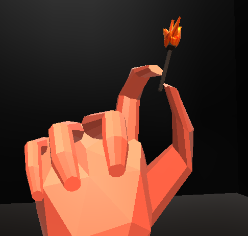
🔍📖 Contexto del proyecto
Este proyecto grupal explora la narrativa audiovisual mediante programación de cámaras y construcción de escenarios en 3D. El ejercicio consistía en seleccionar un fragmento literario y reinterpretarlo visualmente a través de un recorrido espacial que priorizara el clima, la atmósfera y el punto de vista narrativo. La obra elegida fue Fahrenheit 451 de Ray Bradbury, una novela distópica sobre la censura y la quema de libros, cuyo universo conceptual sirvió como punto de partida para construir el clima audiovisual del proyecto.
Dentro del equipo, mi aporte se centró en el diseño y modelado de personajes en estilo low-poly, definiendo su estética a partir de una investigación visual. También exploré sonidos ambientales para reforzar la tensión del recorrido y propuse transiciones espaciales —como puertas y túneles— para marcar cambios de escena y de estado emocional.
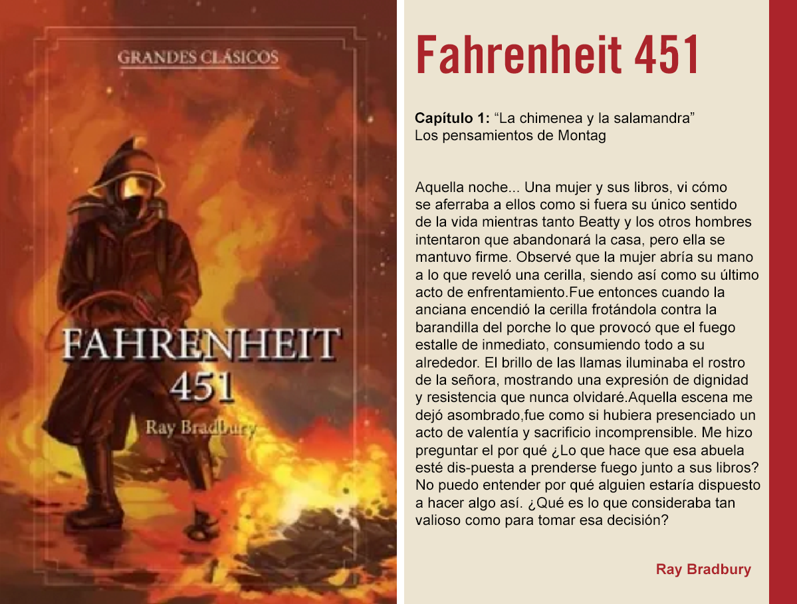
Fragmento seleccionado y enfoque narrativo
Se trabajó a partir de un fragmento del capítulo “La chimenea y la salamandra”, centrado en los pensamientos de Montag durante la quema de libros y el sacrificio de una mujer que decide morir junto a ellos. El texto plantea una escena de alto impacto simbólico, atravesada por el fuego, la resistencia y la duda moral. La adaptación no buscó una representación literal del texto, sino una traducción sensorial y espacial, utilizando el movimiento de cámara, la escala del entorno y la relación entre personajes para transmitir tensión, solemnidad y extrañamiento.
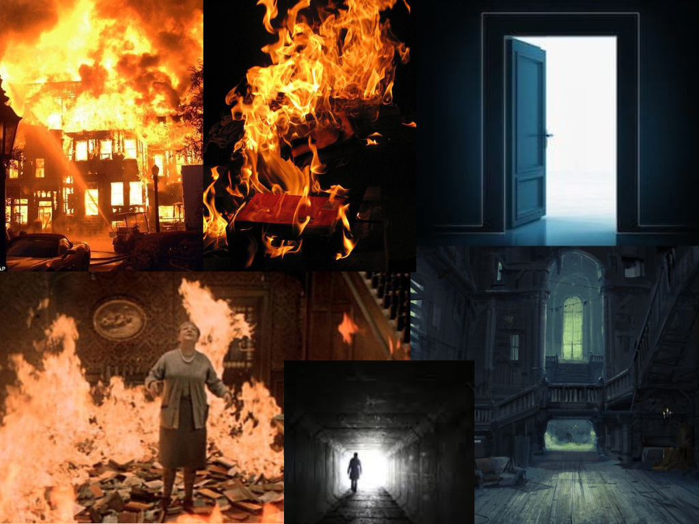
Investigación visual y moodboard
Antes de comenzar el modelado se realizó una búsqueda de referencias visuales para definir el clima del proyecto. El moodboard reunió imágenes relacionadas con fuego, oscuridad, arquitectura y representaciones de personajes, que sirvieron como guía estética para el modelado y la construcción del entorno.
Desarrollo visual y espacial en Blender
El proyecto se desarrolló íntegramente en Blender, donde se construyó un terreno tridimensional que funciona como escenario narrativo. Dentro de este espacio se modelaron los personajes y elementos clave, generando un recorrido de cámaras que atraviesa el entorno de forma controlada. Las cámaras se desplazan dentro del modelo siguiendo trayectorias programadas, simulando una mirada externa que observa la escena sin intervenir, reforzando la sensación de vigilancia y distancia emocional propia del universo de Fahrenheit 451.
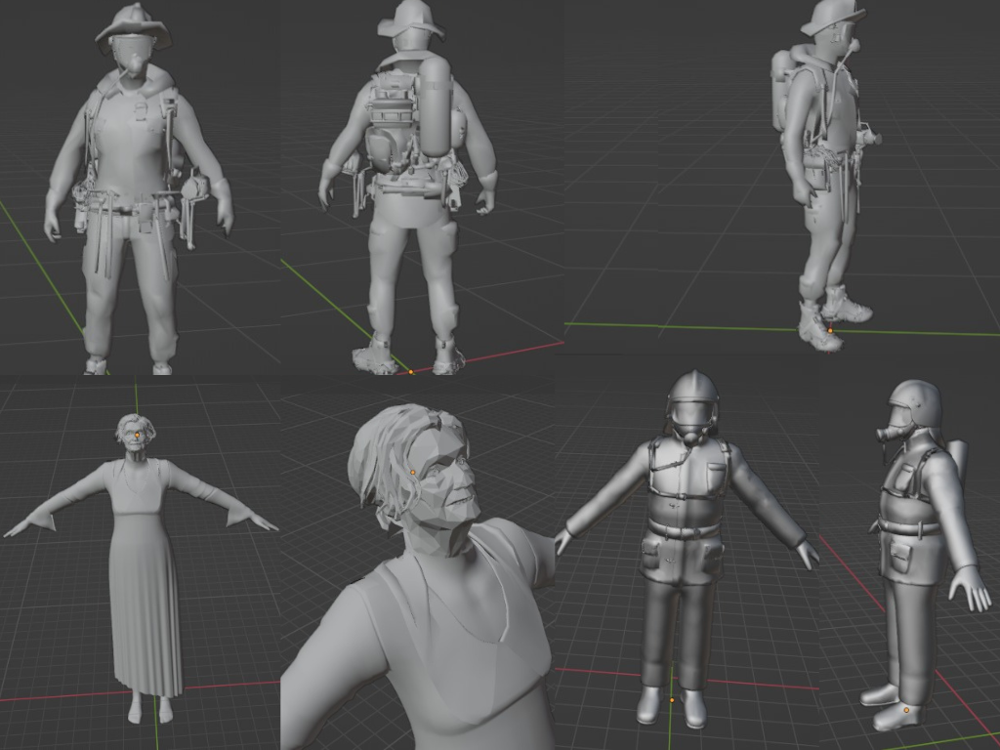
Referencias visuales para modelar
Con estos modelos se comenzó a tener de referencia para posiciones y demás para seguir avanzando mientras se crean los modelos, también de referencia visual para saber que inspiración o demás. Son modelos descargados de internet.
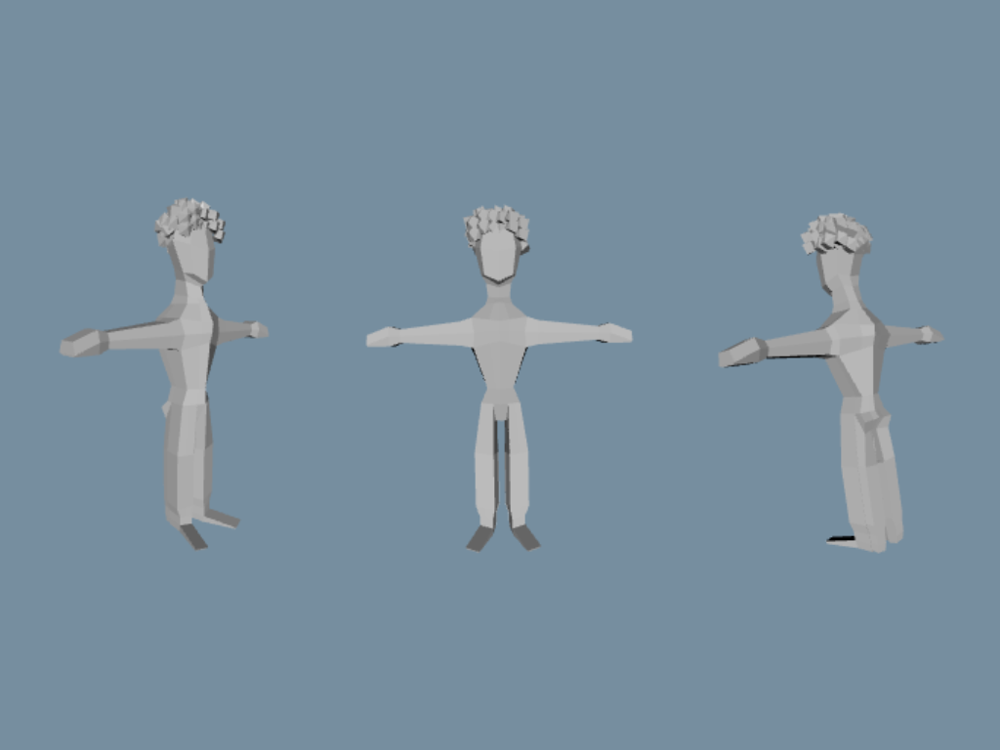
Modelo de la anciana
Realicé este modelo de blender siguiendo tutoriales sobre la anatomia en cuanto su pelo solo hice bolitar y luego le reduci todo en low low-poly. Los bomberos utlizamos el cuerpo de la anciana solo que le hice un sombrero.
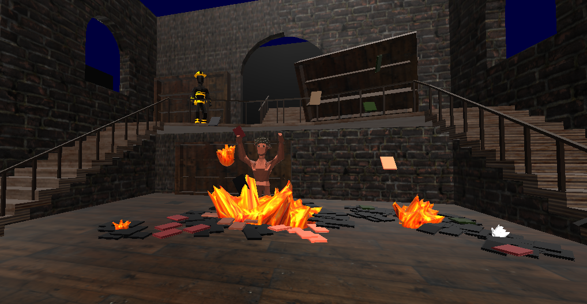
Modelo final
El modelo final de la anciana, con color rojizo, no se le dió mucha importancia a la textura ya que se estaría incendiando fuego, por eso el color rojo. Los bomberos tienen alguna textura amarillas sencillas.
Recorrido, transiciones y atmósfera
Las transiciones cumplen un rol narrativo clave dentro de la pieza. Elementos como puertas y túneles funcionan como umbrales simbólicos, permitiendo pasar de un espacio a otro sin cortes bruscos y manteniendo la continuidad del relato.
El recorrido de cámara fue pensado como una experiencia progresiva, donde el espectador se introduce gradualmente en la escena, acompañando el clima de inquietud y reflexión que atraviesa el fragmento literario.
Para reforzar esta experiencia se trabajó también el diseño sonoro a partir de sonidos ambientales y texturas sutiles, evitando musicalizaciones evidentes. El objetivo fue sostener la sensación de vacío y tensión del espacio sin distraer del recorrido visual.
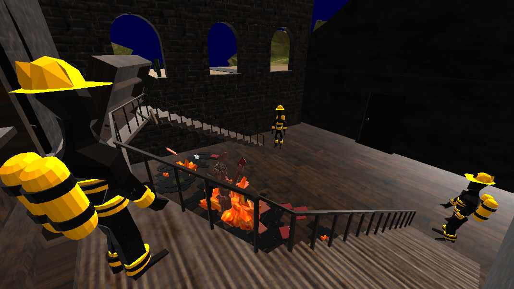
👓 Aprendizajes
Más allá del resultado visual, el proceso funcionó como una traducción narrativa donde el espacio, el tiempo y el movimiento reemplazan a la palabra escrita, guiando la mirada del espectador a través del entorno.
Además, el proyecto me ayudó a animarme a modelar en 3D, algo que al principio me generaba inseguridad y miedo teniendo cierta dificultad. Con práctica y paciencia fui entendiendo el proceso y terminó siendo una experiencia muy disfrutable, que me permitió crear formas y personajes que no imaginaba al comienzo.
Documentación del proyecto
📄 Guión y procesos
Experiencia
🔗 Ver proyecto narrativoObra interactiva con voz
Programación creativa · Visual generativo con interacción al sonido
🔍 Concepto e interacción
Esta obra interactiva explora el sonido y la voz como forma de interacción directa con una
composición visual generativa. La intensidad del audio capturado por el micrófono modifica
parámetros visuales en tiempo real.
Gestos simples como hablar o aplaudir activan el sistema y producen respuestas visuales
inmediatas, generando cambios en el color y la posición de los elementos en pantalla y
reforzando la relación de causa–efecto entre el usuario y la obra.
Dentro del trabajo grupal participé en la investigación de referentes interactivos, el diseño
visual de la composición y el desarrollo en p5.js junto con mis compañeros, además de colaborar
en la revisión de errores durante la programación.
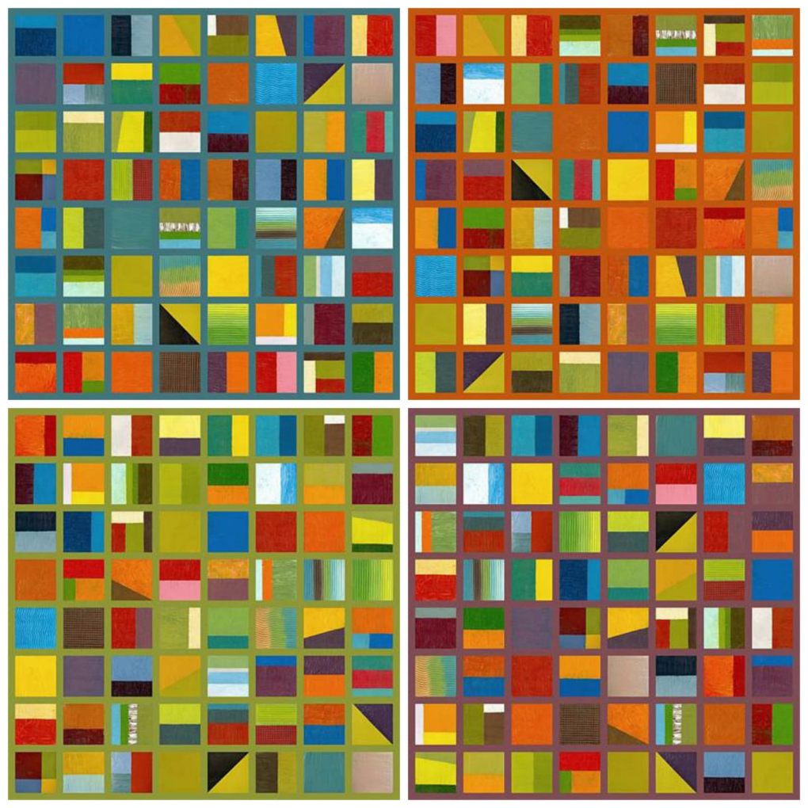
Autor: Michelle Calkins
🎨 Búsqueda de referentes artísticos
La primera etapa consistió en investigar distintas obras interactivas basadas en sonido y voz.
A partir de este análisis se seleccionó un referente artístico viable de implementar, priorizando
artistas menos difundidos.
Esta referencia permitió definir una interacción clara entre sonido y respuesta visual,
orientando tanto el diseño de la pieza como su desarrollo técnico.
💻 Proceso y desarrollo técnico
La obra fue desarrollada en p5.js utilizando la entrada de micrófono para analizar niveles de
sonido y traducirlos a variables visuales.
La composición está formada por cuadros abstractos que cambian color y posición según la
intensidad del audio detectado, permitiendo que el usuario comprenda rápidamente cómo sus
acciones influyen en la obra.
Durante el desarrollo se realizaron distintos prototipos para explorar cómo traducir el sonido en comportamiento visual. Estas pruebas permitieron ajustar la relación entre intensidad de audio y respuesta en pantalla, definiendo progresivamente la lógica final de la obra.
Primeras pruebas en Processing centradas en la alineación y generación de formas.
Transición a p5.js y exploración de la relación entre intensidad sonora, color y movimiento.
👓 Aprendizajes
El proyecto funcionó como una exploración entre sonido, imagen y usuario dentro de un sistema interactivo. La experiencia permitió integrar investigación artística, diseño visual y programación, comprendiendo cómo una acción simple del usuario puede generar respuestas visuales en tiempo real.
Durante el desarrollo aparecieron limitaciones en el sistema de detección de sonido, que no siempre respondía con precisión. Esto permitió identificar problemas técnicos y comprender mejor el funcionamiento de la entrada de audio en p5.js.
Documentación del proyecto
📄 Artista y obra
🔗 Ver prototipos interactivos
Experiencia
🔗 Abrir en nueva pestañaCHAYANNE GAME
Videojuego 2D · Juego de caída vertical inspirado en NS-Shaft
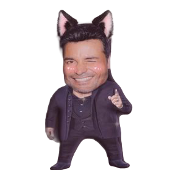
🔍📖 Contexto y concepto del juego
Proyecto individual desarrollado en Processing, inspirado en los juegos de caída vertical como NS-Shaft. A partir de un tutorial base, el proyecto fue adaptado y personalizado tanto en lo estético como en lo lúdico, incorporando decisiones propias en mecánicas, diseño visual y estructura del juego.
El jugador controla una versión caricaturesca de Chayanne que cae constantemente en un entorno vertical. El objetivo es mantenerse en el aire el mayor tiempo posible, evitando la caída y alcanzando una meta de 30 puntos, lo que introduce una lógica de supervivencia y desafío progresivo.
Gameplay y sistema del juego
A lo largo del recorrido, el jugador interactúa con distintos tipos de plataformas con comportamientos específicos. Algunas superficies son estables y permiten avanzar con seguridad, mientras que otras son deslizantes y dificultan el control del personaje. También aparecen bloques que reducen la vida del jugador y plataformas de rebote que modifican el ritmo del descenso.
Esta variedad obliga a tomar decisiones rápidas y a leer el espacio de forma constante, manteniendo la tensión del gameplay y la atención del jugador.
El juego se organiza mediante un sistema de pantallas que separa claramente el inicio, la partida, las pantallas de resultado (victoria y derrota) y una pantalla de créditos. Esta estructura permitió trabajar la lógica de estados dentro de Processing y presentar el proyecto como un videojuego completo, más allá de una simple prueba técnica.
Durante la partida, el jugador debe mantenerse en el aire el mayor tiempo posible y alcanzar una meta de 30 puntos para ganar, lo que introduce una lógica de desafío progresivo basada en supervivencia.
Diseño visual y sonoro
En el aspecto sonoro se incorporó música instrumental de Chayanne, lo que refuerza el tono humorístico y paródico del juego.
La identidad visual combina una representación caricaturesca del personaje con fondos simples inspirados en estética pixel art. Para la pantalla inicial se utilizó una imagen de cielo y pasto como referencia visual al género de videojuegos retro, mientras que durante la partida el escenario mantiene un fondo de cielo con nubes en estilo pixel que permanece constante durante el descenso.
El juego también utiliza pantallas de resultado simples para comunicar el estado de la partida. Al perder aparece una imagen de una esfera roja enojada, mientras que al ganar se muestra una esfera amarilla felicitando al jugador, reforzando el tono humorístico del proyecto mediante referencias visuales reconocibles.
👓 Aprendizajes
Este proyecto implicó explorar la relación entre programación interactiva, diseño de mecánicas y construcción de una experiencia jugable. A partir de la adaptación de un tutorial base, el proceso se centró en comprender cómo pequeñas decisiones de diseño pueden modificar el ritmo, la dificultad y la lógica del juego.
El desarrollo permitió experimentar con la implementación de plataformas con comportamientos distintos, el sistema de puntaje y la organización de estados dentro de Processing, integrando programación, diseño visual y estructura de navegación en un mismo proyecto.
Chayanne Game funciona así como un ejercicio de aprendizaje en diseño de videojuegos, donde la adaptación de referencias existentes, la experimentación con mecánicas y el uso del humor como recurso conceptual permitieron construir una experiencia interactiva con identidad propia.
Experiencia
🔗 Ver completoHunting Day
Videojuego 2D · Recreación interactiva inspirada en Duck Hunt
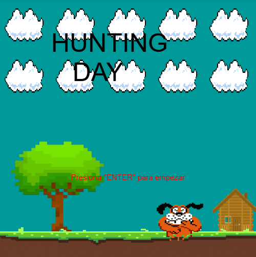
🔍📖 Concepto del proyecto
Hunting Day es un videojuego 2D desarrollado en Processing inspirado en el clásico Duck Hunt. El objetivo del proyecto fue recrear su dinámica de juego, su estética visual y la lógica que caracteriza al título original.
La propuesta buscó reproducir la experiencia de caza de patos voladores manteniendo elementos característicos del juego clásico como el sistema de puntaje, los tiempos de espera entre rondas y sus estados de victoria o derrota.
Incluso se conservaron ciertas limitaciones visuales propias de la época, como la baja legibilidad del puntaje, para mantener la identidad del juego original y reflexionar sobre cómo esas decisiones técnicas también forman parte de su diseño.
Mi rol en el proyecto
Diseño visual
- Adaptación de gráficos inspirados en Duck Hunt
- Diseño de textos y elementos en pantalla
- Integración estética del sistema de puntaje
Sonido e interacción
- Implementación de efectos de sonido
- Desarrollo de botones interactivos
- Pantallas de victoria, derrota y créditos
Trabajo colaborativo y desarrollo
La programación principal del juego —movimiento de los patos, sistema de disparo, mira, puntaje y mecánicas jugables— fue desarrollada por otro integrante del equipo.
Mi trabajo consistió en integrar estos sistemas con el diseño visual y sonoro del proyecto, desarrollando las pantallas del juego y los elementos de interfaz necesarios para completar la experiencia.
El trabajo grupal permitió articular distintas áreas del desarrollo de videojuegos y coordinar decisiones técnicas y estéticas dentro de un mismo proyecto.
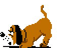
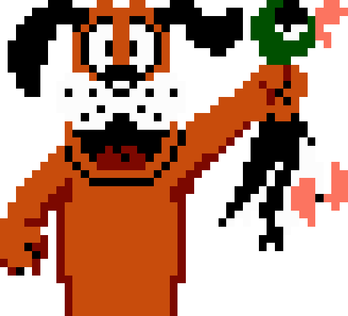
👓 Aprendizajes
El proyecto permitió explorar el proceso de adaptación de un videojuego clásico, analizando cómo las decisiones técnicas, visuales y de interacción construyen la identidad de una experiencia lúdica.
También implicó trabajar de forma colaborativa en el desarrollo de un sistema interactivo, integrando programación, diseño visual y sonido para construir un videojuego completo dentro de Processing.
Experiencia
🔗 Ver completoIlusión óptica interactiva
Programación creativa · Experimento visual basado en percepción e interacción
🔍📖 Concepto
Proyecto individual orientado a la exploración de la percepción visual a través de programación creativa en Processing.
La propuesta consiste en una ilusión óptica interactiva construida a partir de líneas geométricas que reaccionan al movimiento del usuario, generando variaciones de escala y rotación en tiempo real.
El proyecto investiga cómo pequeñas modificaciones en la estructura geométrica de una imagen pueden producir sensaciones de profundidad, movimiento y distorsión perceptiva.
Sistema visual e interacción
⚙️ Construcción visual
La pieza se construye a partir de un círculo formado por múltiples líneas entrelazadas que generan una trama geométrica densa. El sistema mantiene un movimiento de rotación constante, creando una sensación de flujo continuo.
💻 Interacción
La posición del mouse modifica el tamaño del sistema visual. Al acercarse al centro la figura se contrae, mientras que al desplazarse hacia el exterior se expande, generando una sensación de zoom dinámico.
Experiencia perceptiva
La combinación de rotación, repetición de líneas y cambios de escala genera un efecto visual envolvente que puede resultar hipnótico o desorientador.
La ilusión no se basa en una imagen fija, sino en la relación dinámica entre movimiento, interacción y respuesta visual del sistema.
El usuario es invitado a experimentar con el movimiento del cursor para descubrir cómo pequeñas variaciones modifican la percepción de profundidad y movimiento dentro de la figura.
👓 Aprendizajes
Este proyecto permitió explorar la programación creativa como herramienta para la construcción de experiencias visuales interactivas. A través del desarrollo de la ilusión óptica, el proceso implicó experimentar con estructuras geométricas, movimiento y animación para generar un sistema visual dinámico capaz de responder en tiempo real a la interacción del usuario.
La experiencia también permitió comprender cómo pequeñas variaciones en parámetros visuales como la escala, la repetición y la rotación pueden modificar significativamente la percepción de profundidad y movimiento dentro de una imagen. De esta manera, el proyecto funcionó como un ejercicio de exploración entre programación, diseño visual y percepción.
Más allá del resultado visual, el trabajo consolidó el uso de Processing como herramienta para experimentar con comportamiento gráfico e interacción, permitiendo construir una pieza donde la imagen no es estática, sino que se transforma constantemente a partir de la relación entre sistema y usuario.
Experiencia
🔗 Ver completoOtros proyectos de Processing
Existen otros trabajos realizados en Processing que, por limitaciones técnicas, no se encuentran disponibles en formato web.
Estos proyectos continúan explorando programación creativa, interacción y composición visual. Se pueden descargar para su visualización y ejecución local.
🔗 Ver repositorio de Processing en GitHub